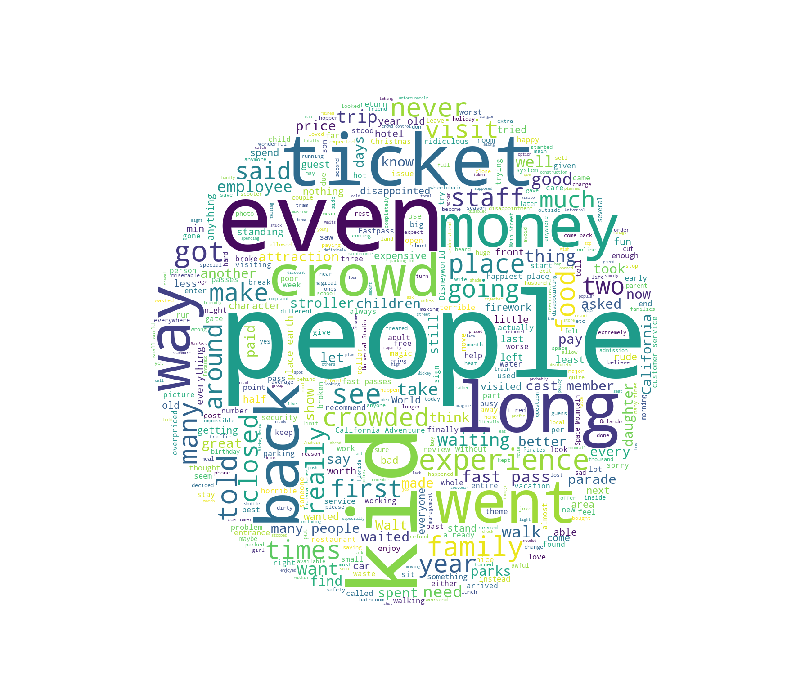
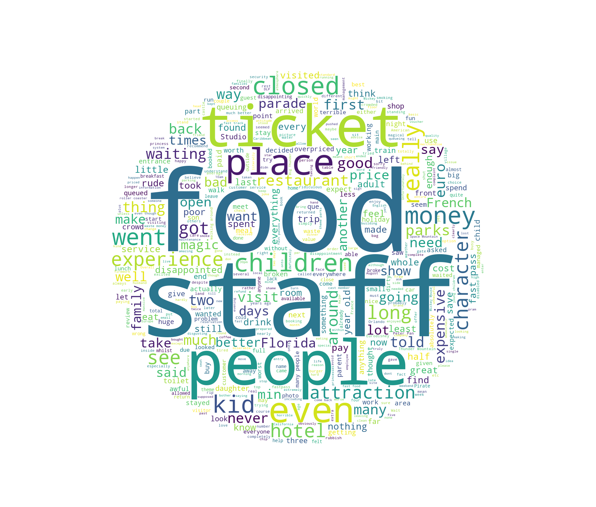
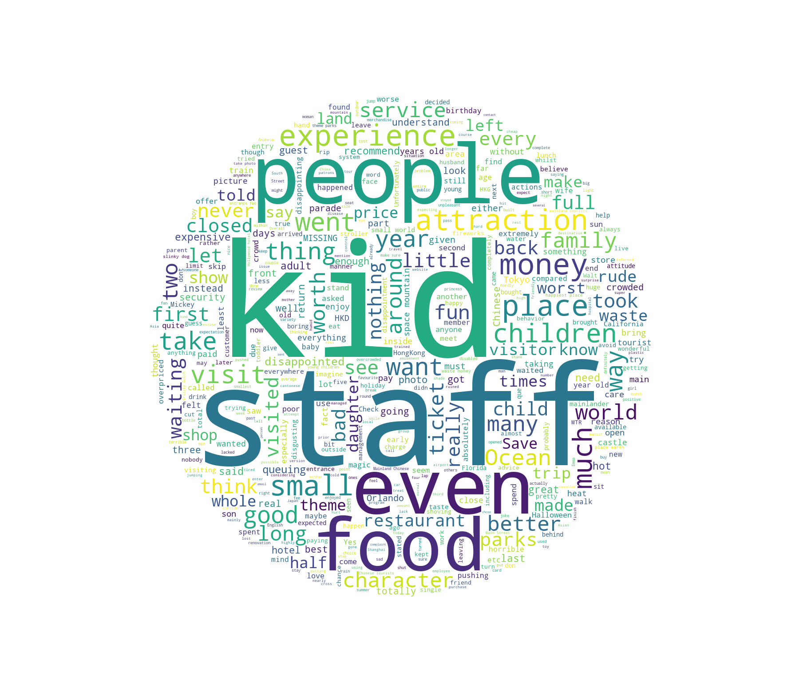

Disneyland Sentiment Analysis
Executive Summary
This project centers around the concept of sentiment analysis visualization of a Disneyland review dataset using WordClouds. By utilizing SQL queries, Tableau visualizations, and Python, the data is analyzed to identify customer satisfaction trends and create a visualization of words most commonly appearing in positive and negative reviews.
Introduction
Scouring the endless supply of Kaggle datasets, I stumbled across this dataset which contained data totalling ~42,000 reviews from Trip Advisor for three Disneyland locations: Paris, California, and Hong Kong. The dataset looked interesting enough, but what really interested me was what insights I could pull from the review text and see if I could identify problem points at each location.
Analysis
The first step in analyzing the data was finding the average rating by location as well as how they changed with respect to time.
Query 1: Return average rating and total ratings by park location
SELECT Branch,AVG(Rating) as Avg_Rating, COUNT(Review_ID) as Num_Reviews
FROM `test-project-357201.disney_project.disney_data`
GROUP BY Branch
Query 2: Group ratings by park and month
SELECT Branch, Year_Month, AVG(Rating) as Avg_Rating, COUNT(Review_ID) as Num_Reviews
FROM `test-project-357201.disney_project.disney_data`
WHERE Year_Month != "missing"
GROUP BY Year_Month, Branch
ORDER BY Year_Month DESC, Branch
LIMIT 1000
Using the results from Query 2, the rating for each park over
time (seen above) was created using Tableau. From inspection, it's observed
that the California location received the highest reviews for nearly 9 years (averaging
a rating of 4.4), while Paris received the worst ratings (averaging a rating of 3.9).
Before continuing into analyzing the review text, it's important to understand the
breakdown of park visitor origins to provide further context to the analysis. Using Query 3,
data for all the reviewer locations for each park are retrieved which are then visualized
using Tableau.
Query 3: Reviewer location by park location
SELECT Reviewer_Location,COUNT(Review_ID) as Num_Visitors
FROM `test-project-357201.disney_project.disney_data`
WHERE Branch = "Disneyland_[Branch]"
GROUP BY Reviewer_Location
LIMIT 1000
Reviewer location breakdown for individual parks - Click images to open in new tab
{kind=link}
Based on data, the bulk of reviews come from the United States and United Kingdom. While the visualizations help show where the reviews are coming from, it's important to note that this data is not representative of the parks actual visitors. Since the data is collected from Trip Advisor, there is bias for countries that primarily use the website for travel reviews. This is likely why Hong Kong doesn't appear in even the top five reviewer locations for Disneyland Hong Kong.
To conduct the sentiment analysis, a SQL query is used to extract the dataset for one-star reviews from each location and is then fed into a Python script to read, analyze, and create the WordCloud diagram. In order to identify problem areas, words that relate to the park name itself or long lines were ignored as they both frequently appear reviews, regardless of rating.
Query 4: Extract one-star ratings filtering for each park
SELECT Review_ID,Review_Text
FROM `test-project-357201.disney_project.disney_data`
WHERE Branch = "Disneyland_[Branch]", Rating = 1
LIMIT 1000Python 1: Script to create WordClouds from CSV data
import pandas as pd
import numpy as np
import plotly.express as px
from wordcloud import WordCloud,STOPWORDS
from PIL import Image
# Read csv with pandas
df = pd.read_csv("Disneyland/DisneylandReviews.csv",encoding="latin-1")
# Histogram distribution of all ratings
fig = px.histogram(df,x="Rating")
fig.update_layout(title_text="Ratings")
fig.show()
# Create stopwords list and append additional stopwords
newstops = list(STOPWORDS)
liststops = ["Disneyland","Disney","Ride",
"Park","rides","day","one","Paris",
"Hong","Kong","line","queue","time",
"will","wait","hour","minute","minutes",
"queues","hours","lines"]
for i in liststops:
newstops.append(i)
# Import circle mask and create wordcloud to save to file
circle_mask = np.array(Image.open("Disneyland/circle_mask.png"))
text = " ".join(text for text in df.Review_Text)
wc = WordCloud(width=700,height=700,stopwords=newstops,mask=circle_mask,background_color="white",max_words=500,min_word_length=3).generate(text)
wc.to_file("Disneyland/wordcloud_all.png")California One-Star Review WordCloud
Paris One-Star Review WordCloud
Hong Kong One-Star Review WordCloud
The three WordClouds share many of the same commonly occurring words, but one point that stands out is that "staff" and "food" are starkly more recurring in the Paris and Hong Kong reviews compared to the California reviews. While inspecting the data, another point that stood out was that "closed" appeared more commonly in the Paris reviews compared to the other parks. After further research, renovations and maintenance have caused various ride closures throughout the years.
Conclusion
WordClouds proved to be an effective method in visualizing review data. By controlling for stop words, areas needing improvement such as staff, food, and ride closures become more clear. While results seem promising, the data may be skewed in favor of English-speaking reviewers which would lead to an unrepresentative model especially of the Hong Kong branch as seen in the reviewer location breakdowns.